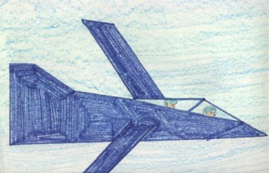

My Invention
On May 3, 1988 I was in my room doing my homework. I was just about to finish
when I thought of something. I wondered what it would be like to travel in
time. I hurried and finished my Homework. Then I looked in my bank and I
got $20.00. I asked my mom if I could go to the junkyard to get some things.
She said, "Yes, but be back by 9:00." So I went there and I got some sheet
metal and a few other things. I also bought a shopping cart to bring the
things in. I got my
dad's tools. I called up Jon when I was done. We were just about to go to
1433 when my mom knocked on the door. She asked if she could come in. Before
I said yes, I pressed a button on my time machine. It folded into a box the
size of a typewriter key. So then I told my mom she could come in. She said
that she would let me play outside with Jon if I took out the garbage. So
I took out the garbage and pushed the button on my time machine and Jon and
I got in.
Good bye!
Time Travel
It was May 30, 1988. A few days ago I built a time travel jet. After I built
it I called Jon. Then we went into my jet and took off. That was our first
test on the jet. We found out that it worked. Then we went even farther into
the future than the first time. Thinkgs were different than now. Everyone
in that time had time travel jets. Children had jets the size of a bicycle.
Babies had mini-jets the size of a matchbox car. The baby's jets were really
neat. When the babies flew their jets the time in the room they were in would
change to whatever the baby wanted. Once we got back to 1988 Jon said to
make another seat in the back. So we went to work right away. Soon
there was three seats. Jon and I brought it to school to play for recess.
Danielle was the first one to notice something in my pocket so I told her
about my time travel jet. She asked if she could go in the back seat. Then
she said if nobody went in the back seat it would go to waste. Jon and I
thought it over. We said OK. "Today will be extended recess," Mrs. Duffey
said. When it was lunch recess time, John, Danielle and I got into the jet
and went to the year 2000 BC.
Goodby!